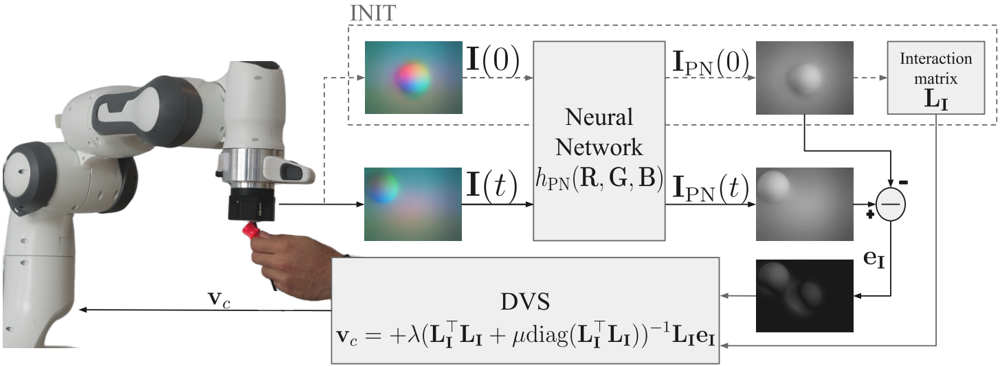
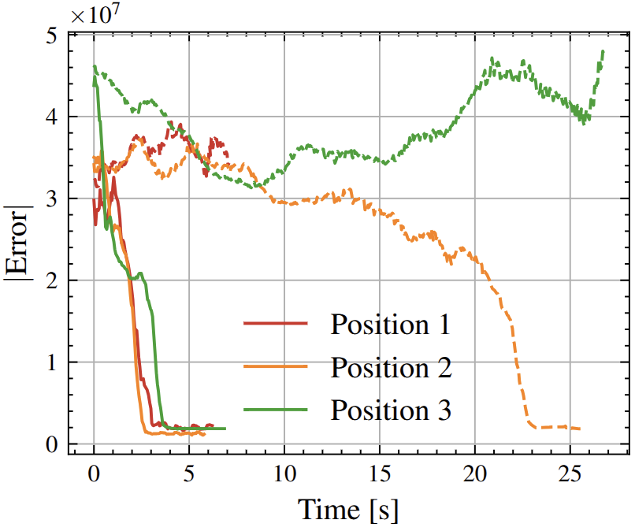
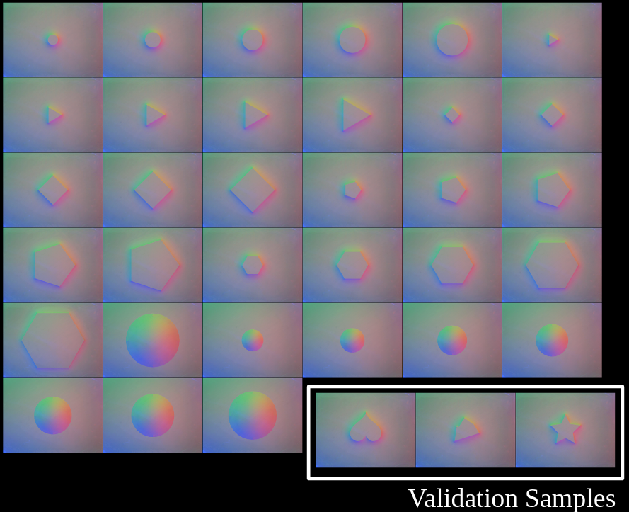

From Pixels to Touch: Direct Tactile Servoing with Learned Photometric Normalization
A direct tactile servoing framework that operates in tactile image space using a learned photometric normalization network, enabling robust closed-loop control without explicit pose or force estimation.
Overview
Abstract
Vision-Based Tactile Sensors (VBTSs) offer high- resolution contact information essential for robust robotic contact- rich manipulation under occlusions and variable lighting. Direct Visual Servoing (DVS) is an interesting alternative to classical Position-Based Visual Servoing (PBVS) as it operates directly on raw pixel intensities, without requiring feature extraction and simplifying the control pipeline. Applying DVS to VBTSs is a challenge because of the sensors' strong position-dependent lightning effects that violate the brightness-constancy assumption that DVS requires. In this work, we introduce a Direct Tactile Servoing (DTS) framework that adapts the principles of DVS to VBTS. Our approach integrates a deep convolutional U- Net that maps raw RGB tactile images to spatially normalized grayscale representations, restoring photometric consistency while preserving fine contact features. We further conduct targeted ablation studies to identify training strategies that balance generalization performance and data efficiency. This learned normalization enables the direct use of DVS control laws without explicit pose or force estimation. Experiments on a robotic manipulator equipped with a GelSight Mini sensor validate robust and reactive closed-loop tactile servoing across diverse contact conditions.
Highlights
- Direct tactile servoing in image space without explicit pose or force estimation.
- U-Net-based photometric normalization that restores brightness constancy for GelSight-like sensors.
- Ablation studies on data design, augmentation, training efficiency, and input resolution.
- Real-world validation on a Franka Panda with 25 Hz online control.
Method

The method has two stages. First, a photometric normalization network transforms the raw RGB image from the vision-based tactile sensor into a normalized grayscale image whose appearance is less dependent on contact position. Second, direct visual servoing is applied directly to that normalized tactile image, using pixel intensities as the feedback signal.
This is important because GelSight-style sensors deliberately use structured multi-color illumination to encode geometric detail, but that same illumination causes the same contact to look different across the sensor surface. The learned mapping compensates for that effect and makes direct tactile control possible without an intermediate pose-estimation module.
Results

Regulation to a desired contact image
DTS converges reliably from multiple initial positions, while the classical grayscale baseline loses contact or converges much more slowly.
Photometric normalization analysis
Simulation and real-data studies show substantial improvement over classical grayscale and support training with a compact sphere-only dataset.

Tracking moving objects with DTS
The robot maintains contact and follows object motion across varied shapes, materials, and contact geometries using only tactile image feedback.
Citation
@article{prior2026pixels2touch,
title = {From Pixels to Touch: Direct Tactile Servoing with Learned Photometric Normalization},
author = {Prior Sancho, Lluis and Belvedere, Tommaso and Tognon, Marco},
journal = {IEEE Robotics and Automation Letters},
year = {2026}
}